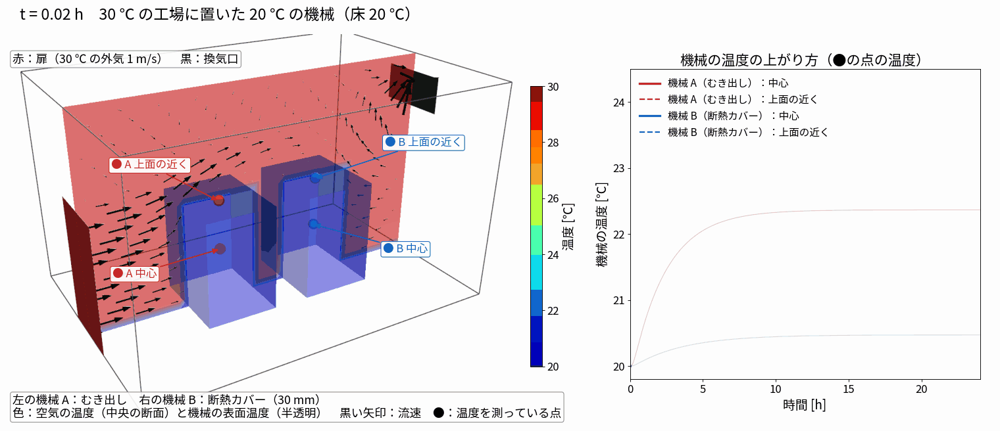

作成日：2026-11-04 OpenFOAM v2512
| 項目 | 内容 |
|---|---|
| ケース | run001_factory_ambient_cover |
| ソルバ | chtMultiRegionFoam（空気の流れ 120 s → frozenFlow で温度だけ 24 h） |
| セル数 | 空気 24,960 ＋ 機械 960 × 2 |
| 計算時間 | 流れ 23 分 ＋ 温度 3 分（1 並列） |

（黒い矢印は中央の断面の流速ベクトル。扉から入った空気が機械の間を抜けて換気口へ向かう）
python3 tools/make_factory_case.py run001_factory_ambient_cover
run001_factory_ambient_cover/Allrun # stage1（流れ）→ stage2（frozenFlow で温度）
python3 tools/render_factory.py run001_factory_ambient_cover